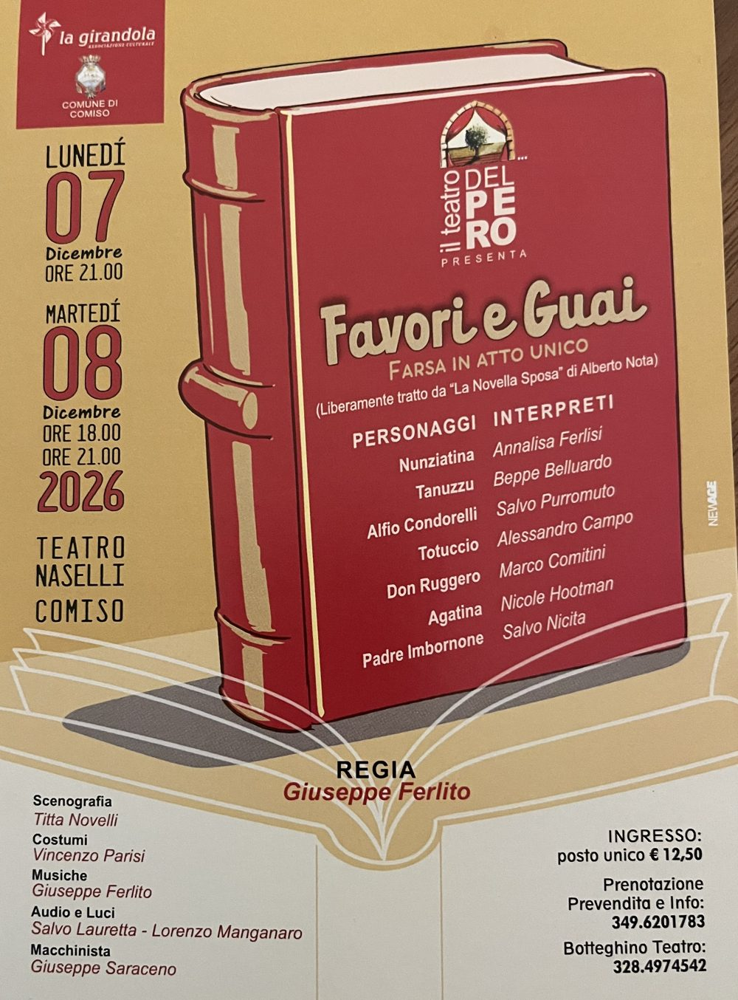

Il settimo si riposò
Semy Fayad
RepertorioNegli anni abbiamo dato vita a numerosi allestimenti, costruendo un repertorio che intreccia dialetto, commedia e teatro d'autore.
Farsa in atto unico, liberamente tratta da “La Novella Sposa” di Alberto Nota. Regia di Giuseppe Ferlito.
Lunedì 7 dicembre 2026, ore 21:00
Martedì 8 dicembre 2026, ore 18:00 e ore 21:00
Teatro Naselli — Comiso (RG)
Posto unico € 12,50
349 6201783 · Botteghino teatro 328 4974542

In collaborazione con l'Ass. culturale “la girandola” e il Comune di Comiso. La nostra rassegna dal vivo è “Domenica Rido”: il cartellone completo è nella pagina Stagione.
da Alberto Nota · regia di Giuseppe Ferlito
In scenaSemy Fayad
RepertorioDino Di Gennaro
RepertorioEduardo Scarpetta
RepertorioAlfia Leotta
RepertorioAlfia Leotta
RepertorioStefano Palmucci
RepertorioEduardo De Filippo
RepertorioEduardo De Filippo
RepertorioVincenzo Scarpetta
RepertorioEduardo Scarpetta
RepertorioNino Martoglio
RepertorioLuigi Capuana
RepertorioNino Martoglio
RepertorioEduardo De Filippo
RepertorioMolière
RepertorioGiuseppe Macrì
RepertorioNino Martoglio
Repertorio